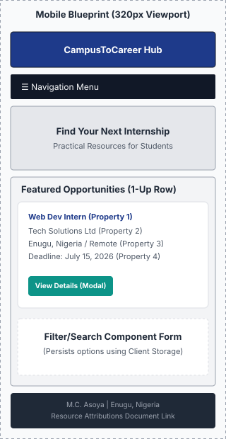
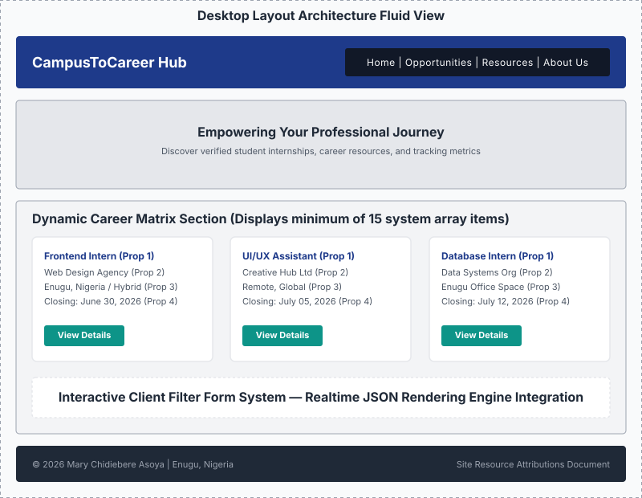

1. Site Name & Purpose
Proposed Site Name
CampusToCareer (or Student Career & Internship Hub)
Reasoning: This name explicitly targets students transitioning from academic environments into professional fields. It directly reflects the site's ultimate goal: bridges the gap between structured education and active employment.
Site Purpose
The purpose of this website is to provide students with a centralized, reliable hub to discover curated internship listings, entry-level jobs, scholarships, and professional growth materials. It delivers practical, actionable content to streamline resume preparation, career path alignment, and interview readiness, solving the common student struggle of finding scattered career assets in separate locations.
2. Target Audience Scenarios
To guide meaningful content production, the architecture provides direct answers to these common user issues:
- Scenario A: "I am a sophomore looking for a remote frontend development internship this summer. Where can I find open applications that explicitly match my current skill level, and how can I filter out roles requiring prior experience?"
- Scenario B: "I have a technical interview coming up next week for an entry-level position. Where can I find structured tips on behavioral question strategies, technical review checklists, and templates to optimize my resume?"
3. Design System
Color Palette
Typography
Heading Font: "Play", sans-serif
Body Font: "Roboto", sans-serif
Application: Clean, highly legible sans-serif typefaces reduce cognitive load for students reading dense application descriptions, tabular data guidelines, and long-form resource documentation.
4. Home Page Wireframe Blueprint
Layout structure designed to fulfill mobile-responsive layout specifications (320px up to widescreen display formats) without generating horizontal overflow scrollbars.

Desktop Layout (Wide Viewport)
